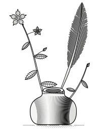
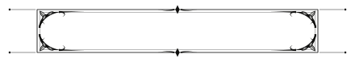

I.
The surface
What is the best surface for a person to think on, to decide on, and to review, when machines do most of the drafting? We are after the shape of the place where the hand still lands, and how little it should have to touch.
The agents are here; the instruments are not.

2026, all rights reserved
team@longhorizonresearch.com
Long Horizon Research is a small laboratory in San Francisco. We study what passes between a person and an agent once the machine does most of the drafting.
The agents arrived first. The instruments did not follow. The writing surface, the review, the record of who chose what: each of them was designed for a room in which only people wrote.
So we build the instruments, and then we study them in use. We would rather learn from a tool someone reaches for every morning than from a benchmark built for the occasion.
We publish what we learn and we ship what we build. For us those are one activity and not two.
What is the best surface for a person to think on, to decide on, and to review, when machines do most of the drafting? We are after the shape of the place where the hand still lands, and how little it should have to touch.
Can a model learn a person's judgment from the collaboration itself? Every edit, every comment, every acceptance and every reversal is a trace of judgment. We treat that record as signal: personalization, and reinforcement learning on real work rather than on tasks invented for the purpose.
How do several people and several agents share one document without anyone losing track of who did what? Attribution is not bookkeeping. It is the thing that makes review possible at all.
I.
A shared workspace where people and agents write together. Every edit is attributed and every change is reviewable, so the work can pass back and forth without anyone losing the thread of it.
First of a series. The others are still on the bench.
We are hiring researchers and engineers: personalization, reinforcement learning, interfaces.
If you have built something that people use to think with, we would like to see it.
San Francisco.